Apla
Public blockchain platform for building digital ecosystems
Create an ecosystem for developing and running blocking applications in one click.
 Download wallet
Download walletSubscribe to news
Create an ecosystem for developing and running blocking applications in one click.
create blockchain projects easily and quickly
Apla presented several proofs of concepts taken by potential customers from several countries in Europe and Asia
Simvolio is the language for writing smart contracts with fast compilation in byte code.
Simvolio supports a standard set of statements and constructions, functions for handling database tables and an error handling system.
The contract code is written in Molis editor.
Each ecosystem has its own database. Database management tools are used to create tables, add columns and assign access rights.
Application user interfaces are written in Protypo, a special language of the template engine. The functions and constructions of the Protypo language enable you to obtain values from the database, build forms for transferring values to contracts and performing other operations.
The interface page code is created in a special editor of software client Molis.
The visual interface designer allows to easily and quickly customize the appearance of application pages without resorting to HTML code. It is used to add text blocks, form and navigation elements, tables and diagrams to the page, as well as to configure their styles, position and sizes.

Molis is a single tool for accessing all the functionality of Apla. Molis contains APLwallet and an integrated application development environment
Any owner of an Apla account can create his or her own ecosystem in one click. An ecosystem is a software environment for writing and running blockchain applications. Access to applications and right to participate in ecosystem management are owned by its members – Apla users invited by the ecosystem creator.
Molis is a single tool for accessing all Apla features. Molis contains an APL wallet and an integrated development environment for blockchain applications.

One of the main advantages of Apla over other blockchain platforms is that it has a multi-level access rights management mechanism in the ecosystem software environment.

Access rights are set for all operations: creating and changing contracts, database tables, interfaces.
Access rights can be provided to members of the ecosystem, to roles and to smart contracts.
We listed above what is already working, what is already available in the testnet test network, and what will function when Apla’s working version is launched in September 2017.
 {{ item.NAME }} {{ item.PROFESSION }}
{{ item.NAME }} {{ item.PROFESSION }}We are expanding our team!
If you are an expert in golang, please send us your CV.
Join the egaas team!
 13/02/2017 Brief report of the eGaaS team January 29, 2017 — February 6, 2017 More
13/02/2017 Brief report of the eGaaS team January 29, 2017 — February 6, 2017 More 01/03/2017 Report of the eGaaS team January 23, 2017 — February 22, 2017
01/03/2017 Report of the eGaaS team January 23, 2017 — February 22, 2017 06/03/2017 Who will lose their jobs because of blockchain, and what it will bring More
06/03/2017 Who will lose their jobs because of blockchain, and what it will bring More 10/03/2017 Common space for smart contracts and smart laws More
10/03/2017 Common space for smart contracts and smart laws More 11/04/2017 Report of the eGaaS team February 23, 2017 — Mart 22, 2017
11/04/2017 Report of the eGaaS team February 23, 2017 — Mart 22, 2017 22/04/2017 Digital Ecosystem eGaaS is a digital ecosystem designed to implement the idea of e-Government. The term e-Government in eGaaS is interpreted not More
22/04/2017 Digital Ecosystem eGaaS is a digital ecosystem designed to implement the idea of e-Government. The term e-Government in eGaaS is interpreted not More 01/05/2017 e-Government of the future Is it possible to have a situation, where anyone can safely write a code directly in an interface of electronic government? More
01/05/2017 e-Government of the future Is it possible to have a situation, where anyone can safely write a code directly in an interface of electronic government? More 05/05/2017 Report of the eGaaS team Mart 23, 2017 — April 22, 2017
05/05/2017 Report of the eGaaS team Mart 23, 2017 — April 22, 2017 18/06/2017 Report of the eGaaS team April 23, 2017 — May 22, 2017
18/06/2017 Report of the eGaaS team April 23, 2017 — May 22, 2017 18/06/2017 Report of the eGaaS team May 23, 2017 — June 22, 2017
18/06/2017 Report of the eGaaS team May 23, 2017 — June 22, 2017